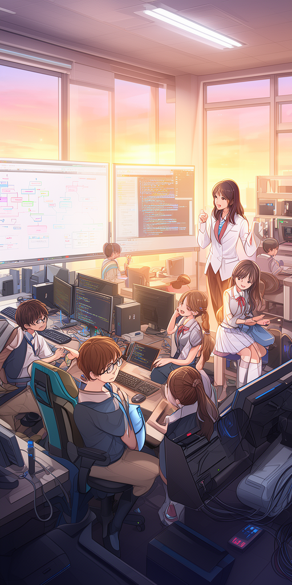

🛡️ このライブラリについて
高校生がサイバーセキュリティの面白さや重要性に触れ、将来の情報科学系・工学系大学への進学やセキュリティ専門職を目指すための入門ライトノベルです。
男子高校生（城崎 悠真 部長）と女子高校生（橘 葵）が、身近なITトラブルや最新のサイバーニュースを題材に、大学の芹沢 涼香 准教授（サイバーセキュリティ研究室 / IPAアドバイザー）と共にセキュリティの仕組みを優しく・正確に探求していきます。
📚 収録エピソード一覧（全7話）

Episode 01
秘密の合言葉と見えない鍵 〜パスワード認証と多要素認証の仕組み〜
学習テーマ: 認証の3要素（知識・所持・生体）、多要素認証（MFA）、アカウントリスト攻撃
小説と図解を読む →
Episode 02
偽りの手紙と本物の目印 〜フィッシング詐欺の見抜き方とURLの秘密〜
学習テーマ: スミッシング、ソーシャルエンジニアリング、URL階層構造、電子証明書（HTTPS）の真実
小説と図解を読む →
Episode 03
街角の電波は誰のもの？ 〜公衆無線LANの危険性と通信の暗号化（HTTPS）〜
学習テーマ: フリーWi-Fi、盗聴と中間者攻撃（MitM）、TLS暗号化トンネル、VPN
小説と図解を読む →
Episode 04
忍び寄るトロイの木馬 〜マルウェアの種類とソフトウェア更新の真実〜
学習テーマ: マルウェア4分類（ウイルス・ワーム・トロイ・ランサムウェア）、脆弱性とパッチ適用
小説と図解を読む →
Episode 05
三つの宝珠を守る城壁 〜情報セキュリティの3大要素（CIA）と多層防御〜
学習テーマ: CIA（機密性・完全性・可用性）、DDoS攻撃、多層防御の同心円モデル
小説と図解を読む →
Episode 06
データベースの合言葉と呪文の罠 〜SQLインジェクションと安全なプログラミング〜
学習テーマ: SQLインジェクション攻撃、文字列連結の脆弱性、プレースホルダ（バインド機構）
小説と図解を読む →
Episode 07
割れない南京錠と魔法の印鑑 〜公開鍵暗号とデジタル署名の数理〜
学習テーマ: 鍵配送問題、公開鍵暗号の鍵ペア、デジタル署名（電子署名）、SHA-256ハッシュ関数
小説と図解を読む →